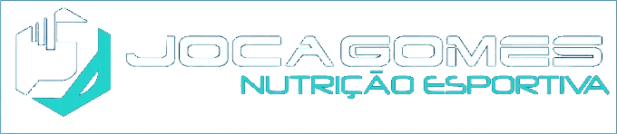

Primeira consulta
Online ou presencial em Copacabana. Você recebe o material de boas-vindas, passamos pela anamnese completa e montamos o plano alimentar para a sua rotina.

Agendar consultaNutrição esportiva · online e presencial
Quem sou eu
Desde criança sou atleta, e na adolescência comecei a pesquisar como a alimentação poderia melhorar minha performance. Na faculdade percebi que a nutrição é uma ciência muito rica — e que eu poderia usar esse conhecimento para ajudar mais pessoas a alcançarem seus objetivos.
Como eu vou te ajudar
Quem nunca foi a um nutricionista e se sentiu abandonado? O modelo de consultas avulsas te dá um único contato a cada 60–90 dias: você recebe o plano, a rotina muda, as dúvidas aparecem — e sem suporte, a frustração vence. Eu trabalho diferente: acompanhamento de perto, a semana inteira, do início ao resultado.
O processo
Online ou presencial em Copacabana. Você recebe o material de boas-vindas, passamos pela anamnese completa e montamos o plano alimentar para a sua rotina.
Toda semana você responde um questionário rápido de biofeedback: como foi a semana, como o corpo reagiu, o que mudou na rotina. Nada de sumir por 2 meses.
Com os dados do check-in, ajusto sua dieta sempre que necessário — toda semana, se for preciso — até o resultado chegar e se manter.
O que você recebe
*Quando houver necessidade, com marcas, doses e horários organizados pra você.
Consultar valores no WhatsAppTipos de consulta
Todos incluem o mesmo método completo — o que muda é a duração do acompanhamento e o número de encontros comigo.
Consulta comigo (online ou presencial) + 4 semanas de acompanhamento com check-in semanal, biofeedback e ajustes de dieta sempre que necessário.
Quero o MensalTodo o processo do mensal, com mais 2 encontros comigo e 3 meses de acompanhamento. É o prazo mínimo pra ver mudanças significativas — sem promessas milagrosas.
Quero o TrimestralO plano de quem busca transformação de verdade: 6 meses de acompanhamento e 6 encontros comigo. Tempo suficiente pra mudanças expressivas e duradouras.
Quero o SemestralParcelamento no cartão de crédito · Desconto no pagamento à vista · Nota fiscal para reembolso no plano de saúde
Como contratar
Você chama minha equipe no WhatsApp e recebe as condições e valores de cada plano.
Escolhe o plano e faz o pagamento do jeito que preferir — à vista ou parcelado.
Com o pagamento confirmado, a equipe inicia o seu processo de boas-vindas.
Você responde a anamnese inicial e marca a 1ª consulta: online ou presencial.
Entra nos nossos sistemas (check-in, Dietbox e grupo) e seu plano está 100% ativo.
Perguntas frequentes
Sempre que precisar! Estamos disponíveis de segunda a sexta, das 9h às 17h. Mensagens fora desse horário são respondidas no dia útil seguinte.
O plano conta a partir da primeira consulta. Ex.: um trimestral iniciado em 01/01 vence em 01/04, com consultas em 01/01, 01/02 e 01/03 — e o último mês acompanhado pelo sistema de check-in.
Sim. Com a nota é possível pedir restituição no imposto de renda e, com pedido médico, reembolso pelo plano de saúde — alguns pacientes recuperam quase o valor integral.
Sim. Na consultoria online a avaliação é feita por fotos, medidas e pelos marcadores de biofeedback coletados nos check-ins semanais.
Se você for do Rio de Janeiro, as consultas podem ser presenciais no consultório em Copacabana. Os feedbacks semanais são sempre online, pelo sistema de check-in.
Avalio o seu quadro e, se necessário, sim — com produtos, marcas, horários e modo de uso já organizados pra você.
É possível contratar esse serviço pelo WhatsApp — ele é feito em conjunto com a equipe multiprofissional Kaizen.
Sim, no cartão de crédito. Pagamentos à vista têm desconto (não parcelamos em boleto ou Pix).
Cancelamentos com menos de 24h de antecedência podem ser remarcados para a semana seguinte (presencial vira online). Nos dois casos, os feedbacks semanais seguem normalmente pelo check-in.
Como todo serviço online, você pode cancelar em até 7 dias após a primeira consulta. Planos trimestral e semestral não podem ser cancelados ou adiados após esse prazo.
Vamos começar?
Chama no WhatsApp, conta seu objetivo e a minha equipe te apresenta o plano ideal — sem compromisso.
Falar com a equipe agora